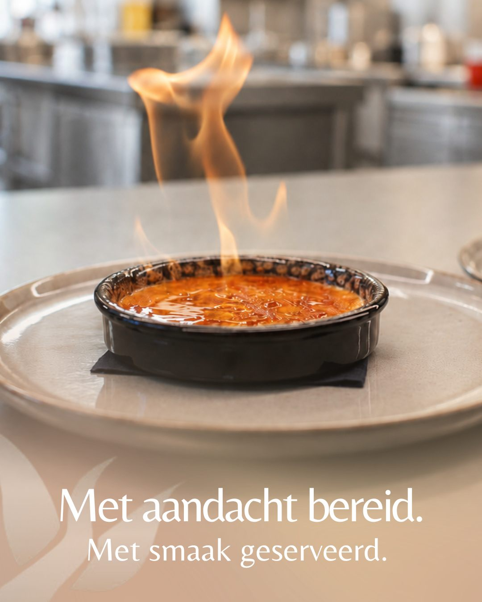

Restaurant
Restaurant De Leeuwerik
Van een prachtige zaak naar een uitstraling die ook online klopt.
De uitdaging
Restaurant De Leeuwerik was net geopend en had alles om op te vallen: een stijlvol interieur en een fotogenieke uitstraling. Alleen kwam die sfeer op sociale media nog onvoldoende tot haar recht.
Onze aanpak
Haute Spot vertaalde de beleving van het restaurant naar video’s en gerichte statics. We brengen de zaak in beeld en houden volgers op de hoogte van suggesties, feestmenu’s en andere nieuwigheden. Zo krijgen mensen al vóór hun bezoek een voorproefje van De Leeuwerik.
Het resultaat
Gemiddeld 60.000 weergaven per maand op Facebook en Instagram samen, alleen al met statics.
60.000weergaven per maand